Upscaling using Renormalization¶
This notebook presents how to use renromalization to upscale a 3D field of hydraulic conductivity Three methods are used:
Simplified renormalization
Standard renormalization
Tensorial renormalization
In addition, upscaling can also be performed using the standard arithmetic, harmonic or geometric means.
The renormalization method performs upscaling by iteratively upscaling small blocks of the field until the desired resolution is achieved. The upscaling of the small blocks is done using different algorithms. The simplified renormalization uses a combination of successive harmonic and arithmetic means of rows and columns of the domain. The standard renormalization solve the flow equation in small blocks of 2x2x2 cells using an electrical analog. The tensorial renormalization also solve the flow equation but with a different formulation which is generally faster than the standard renormalization.
Fore more information about renormalization and these different algorithms, please check the following paper:
Renard, P., Le Loc’h, G., Ledoux, E., De Marsily, G., & Mackay, R. (2000). A fast algorithm for the estimation of the equivalent hydraulic conductivity of heterogeneous media. Water Resources Research, 36(12), 3567-3580.
[1]:
import sys
sys.path.append('../../')
import ArchPy.uppy
from ArchPy.uppy import upscale_k
import numpy as np
import matplotlib.pyplot as plt
import pyvista as pv
import geone
# autoreload
%load_ext autoreload
%autoreload 2
[ ]:
[2]:
pv.set_jupyter_backend("client")
[3]:
nx = 128
ny = 128
nz = 128
dx = 2
dy = 2
dz = .4
Generate a 3D field of hydraulic conductivity¶
Random fields are generated using the geone library. The geone library is a free python package for geostatistical simulations. It is available at https://github.com/randlab/geone
[4]:
# generate a random field
np.random.seed(3)
cm = geone.covModel.CovModel3D(elem=[("cubic", {"w":.2, "r":[100, 100, 10]})]) # covariance model (or variogram model)
sim = geone.multiGaussian.multiGaussianRun(cm, (nx, ny, nz), (dx, dy, dz), [0, 0, 0], mean=-4)
grf3D: Preliminary computation...
grf3D: Computing circulant embedding...
grf3D: embedding dimension: 256 x 256 x 128
grf3D: Computing FFT of circulant matrix...
Let’s also generate a topography surface for our model
[5]:
# simulate a topograhpy
np.random.seed(3)
cm_topo = geone.covModel.CovModel1D(elem=[("cubic", {"w":20, "r":300})])
topo = geone.multiGaussian.multiGaussianRun(cm_topo, (nx, ny), (dx, dy), [0, 0], mean=46)
geone.imgplot.drawImage2D(topo)
# values above the topography are set to nan
zg = np.arange(0, sim.val.shape[2]) * dz + dz / 2
zg = np.ones(sim.val.shape) * zg.reshape(-1, 1, 1)
sim.val = 10**np.where(zg > topo.val[:, :, None], np.nan, sim.val)
grf2D: Preliminary computation...
grf2D: Computing circulant embedding...
grf2D: embedding dimension: 512 x 512
grf2D: Computing FFT of circulant matrix...
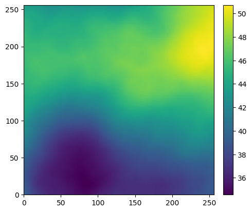
[6]:
pv.set_jupyter_backend("static")
Plot the reference 3D field
[7]:
geone.imgplot3d.drawImage3D_surface(sim, cmap="terrain")
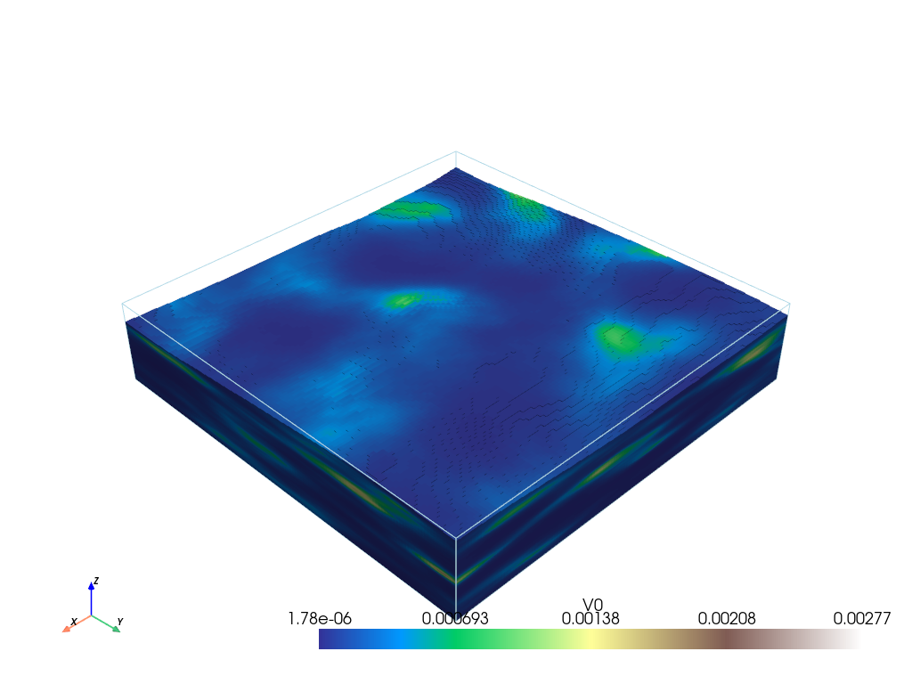
Let us define factors for upscaling. This means that grid will be divided by these factors. For example, if we have a 3D field of size 100x100x100 and we want to upscale it by a factor of 2, the new field will be 50x50x50.
There are three factors: one for the x direction, one for the y direction and one for the z direction.
[8]:
factor_x = 16
factor_y = 16
factor_z = 16
Standard renormalization¶
The standard renormalization is a method that solves the flow equation in small blocks of 2x2x2 cells using an electrical analog. The equivalent hydraulic conductivity of the block is then computed and used to replace the 8 cells of the block. Two grid schemes can be used: the direct scheme and the center scheme. Center scheme is around 2x faster than the direct scheme.
Direct scheme¶
[9]:
import time
[10]:
t1 = time.time()
field_kxx, field_kyy, field_kzz = upscale_k(sim.val[0, 0], method="standard_renormalization", dx=dx, dy=dy, dz=dz, factor_x=factor_x, factor_y=factor_y, factor_z=factor_z, scheme="direct")
t2 = time.time()
t_standard_direct = t2 - t1
[11]:
pl = pv.Plotter(shape=(1, 3), window_size=[2000, 800])
arr = field_kxx
im = geone.img.Img(nx=arr.shape[2], ny=arr.shape[1], nz=arr.shape[0], sx=dx*factor_x, sy=dy*factor_y, sz=dz*factor_z, nv=1, val=arr.reshape(1, *arr.shape), varname=["Kxx / SR - direct"])
geone.imgplot3d.drawImage3D_surface(im, cmap="terrain", plotter=pl)
pl.subplot(0, 1)
arr = field_kyy
im = geone.img.Img(nx=arr.shape[2], ny=arr.shape[1], nz=arr.shape[0], sx=dx*factor_x, sy=dy*factor_y, sz=dz*factor_z, nv=1, val=arr.reshape(1, *arr.shape), varname=["Kyy / SR - direct"])
geone.imgplot3d.drawImage3D_surface(im, cmap="terrain", plotter=pl)
pl.subplot(0, 2)
arr = field_kzz
im = geone.img.Img(nx=arr.shape[2], ny=arr.shape[1], nz=arr.shape[0], sx=dx*factor_x, sy=dy*factor_y, sz=dz*factor_z, nv=1, val=arr.reshape(1, *arr.shape), varname=["Kzz / SR - direct"])
geone.imgplot3d.drawImage3D_surface(im, cmap="terrain", plotter=pl)
# pl.add_title("Standard renormalization - direct", font='times', color='k', font_size=40)
pl.show()
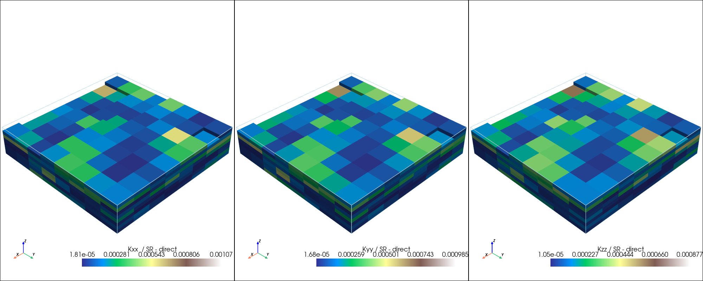
[12]:
pl = pv.Plotter( window_size=[700, 800])
arr = field_kxx/field_kzz
im = geone.img.Img(nx=arr.shape[2], ny=arr.shape[1], nz=arr.shape[0], sx=dx*factor_x, sy=dy*factor_y, sz=dz*factor_z, nv=1, val=arr.reshape(1, *arr.shape), varname=["Kzz / SR - direct"])
geone.imgplot3d.drawImage3D_surface(im, cmap="terrain", plotter=pl)
# pl.add_title("Standard renormalization - direct", font='times', color='k', font_size=40)
pl.show()
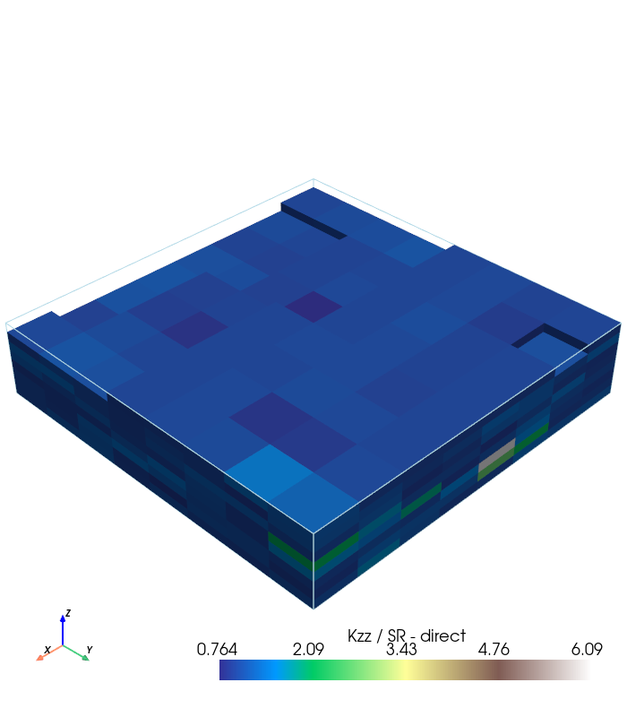
Centered scheme¶
[13]:
t1 = time.time()
field_kxx, field_kyy, field_kzz = upscale_k(sim.val[0, 0], method="standard_renormalization", dx=dx, dy=dy, dz=dz, factor_x=factor_x, factor_y=factor_y, factor_z=factor_z, scheme="center")
t2 = time.time()
t_standard_center = t2 - t1
[14]:
pl = pv.Plotter(shape=(1, 3), window_size=[2000, 800])
arr = field_kxx
im = geone.img.Img(nx=arr.shape[2], ny=arr.shape[1], nz=arr.shape[0], sx=dx*factor_x, sy=dy*factor_y, sz=dz*factor_z, nv=1, val=arr.reshape(1, *arr.shape), varname=["Kxx / SR - center"])
geone.imgplot3d.drawImage3D_surface(im, cmap="terrain", plotter=pl)
pl.subplot(0, 1)
arr = field_kyy
im = geone.img.Img(nx=arr.shape[2], ny=arr.shape[1], nz=arr.shape[0], sx=dx*factor_x, sy=dy*factor_y, sz=dz*factor_z, nv=1, val=arr.reshape(1, *arr.shape), varname=["Kyy / SR - center"])
geone.imgplot3d.drawImage3D_surface(im, cmap="terrain", plotter=pl)
pl.subplot(0, 2)
arr = field_kzz
im = geone.img.Img(nx=arr.shape[2], ny=arr.shape[1], nz=arr.shape[0], sx=dx*factor_x, sy=dy*factor_y, sz=dz*factor_z, nv=1, val=arr.reshape(1, *arr.shape), varname=["Kzz / SR - center"])
geone.imgplot3d.drawImage3D_surface(im, cmap="terrain", plotter=pl)
pl.show()
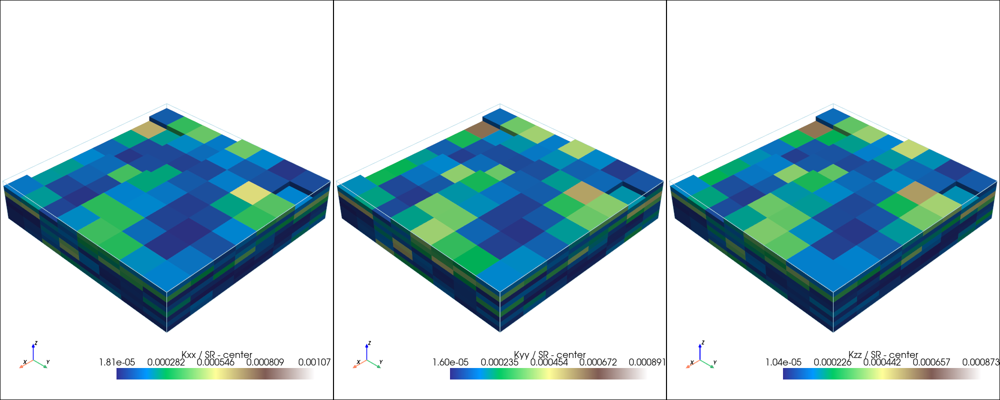
[15]:
pl = pv.Plotter( window_size=[700, 800])
arr = field_kxx/field_kzz
im = geone.img.Img(nx=arr.shape[2], ny=arr.shape[1], nz=arr.shape[0], sx=dx*factor_x, sy=dy*factor_y, sz=dz*factor_z, nv=1, val=arr.reshape(1, *arr.shape), varname=["Kzz / SR - direct"])
geone.imgplot3d.drawImage3D_surface(im, cmap="terrain", plotter=pl)
# pl.add_title("Standard renormalization - direct", font='times', color='k', font_size=40)
pl.show()
Tensorial renormalization¶
[16]:
t1 = time.time()
field_kxx, field_kyy, field_kzz = upscale_k(sim.val[0, 0], method="tensorial_renormalization", dx=dx, dy=dy, dz=dz, factor_x=factor_x, factor_y=factor_y, factor_z=factor_z)
t2 = time.time()
t_tensorial = t2 - t1
[17]:
pl = pv.Plotter(shape=(1, 3), window_size=[2000, 800])
arr = field_kxx
im = geone.img.Img(nx=arr.shape[2], ny=arr.shape[1], nz=arr.shape[0], sx=dx*factor_x, sy=dy*factor_y, sz=dz*factor_z, nv=1, val=arr.reshape(1, *arr.shape), varname=["Kxx / TR"])
geone.imgplot3d.drawImage3D_surface(im, cmap="terrain", plotter=pl)
pl.subplot(0, 1)
arr = field_kyy
im = geone.img.Img(nx=arr.shape[2], ny=arr.shape[1], nz=arr.shape[0], sx=dx*factor_x, sy=dy*factor_y, sz=dz*factor_z, nv=1, val=arr.reshape(1, *arr.shape), varname=["Kyy / TR"])
geone.imgplot3d.drawImage3D_surface(im, cmap="terrain", plotter=pl)
pl.subplot(0, 2)
arr = field_kzz
im = geone.img.Img(nx=arr.shape[2], ny=arr.shape[1], nz=arr.shape[0], sx=dx*factor_x, sy=dy*factor_y, sz=dz*factor_z, nv=1, val=arr.reshape(1, *arr.shape), varname=["Kzz / TR"])
geone.imgplot3d.drawImage3D_surface(im, cmap="terrain", plotter=pl)
pl.show()
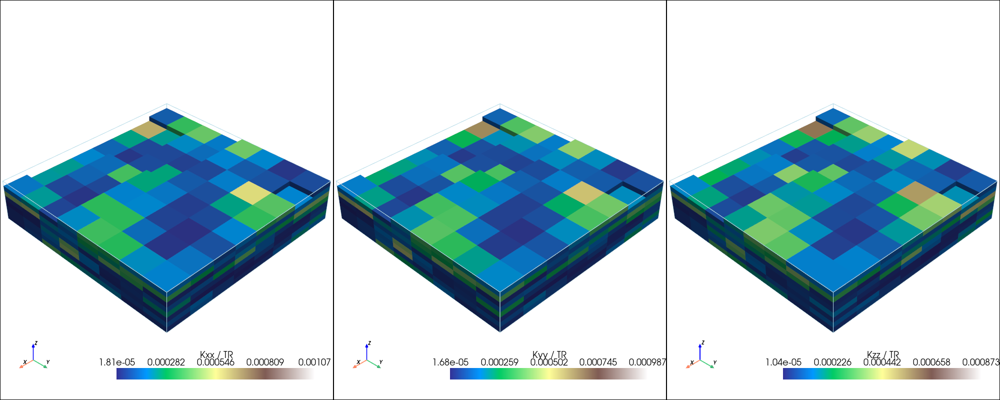
[18]:
pl = pv.Plotter( window_size=[700, 800])
arr = field_kxx/field_kzz
im = geone.img.Img(nx=arr.shape[2], ny=arr.shape[1], nz=arr.shape[0], sx=dx*factor_x, sy=dy*factor_y, sz=dz*factor_z, nv=1, val=arr.reshape(1, *arr.shape), varname=["Kxx / Kzz SR - direct"])
geone.imgplot3d.drawImage3D_surface(im, cmap="terrain", plotter=pl)
# pl.add_title("Standard renormalization - direct", font='times', color='k', font_size=40)
pl.show()
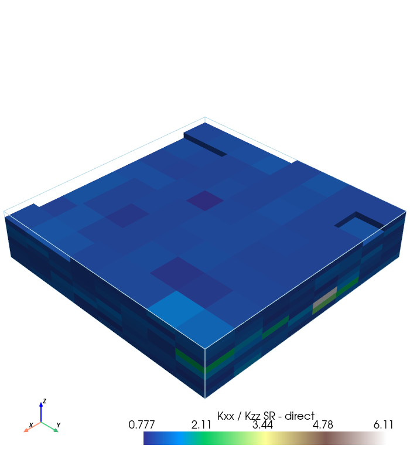
Simplified renormalization¶
[19]:
t1 = time.time()
field_kxx, field_kyy, field_kzz = upscale_k(sim.val[0, 0], method="simplified_renormalization_C", dx=dx, dy=dy, dz=dz, factor_x=factor_x, factor_y=factor_y, factor_z=factor_z)
t2 = time.time()
t_simplified_C = t2 - t1
[20]:
pl = pv.Plotter(shape=(1, 3), window_size=[2000, 800])
arr = field_kxx
im = geone.img.Img(nx=arr.shape[2], ny=arr.shape[1], nz=arr.shape[0], sx=dx*factor_x, sy=dy*factor_y, sz=dz*factor_z, nv=1, val=arr.reshape(1, *arr.shape), varname=["Kxx / Simplified Ren."])
geone.imgplot3d.drawImage3D_surface(im, cmap="terrain", plotter=pl)
pl.subplot(0, 1)
arr = field_kyy
im = geone.img.Img(nx=arr.shape[2], ny=arr.shape[1], nz=arr.shape[0], sx=dx*factor_x, sy=dy*factor_y, sz=dz*factor_z, nv=1, val=arr.reshape(1, *arr.shape), varname=["Kyy / Simplified Ren."])
geone.imgplot3d.drawImage3D_surface(im, cmap="terrain", plotter=pl)
pl.subplot(0, 2)
arr = field_kzz
im = geone.img.Img(nx=arr.shape[2], ny=arr.shape[1], nz=arr.shape[0], sx=dx*factor_x, sy=dy*factor_y, sz=dz*factor_z, nv=1, val=arr.reshape(1, *arr.shape), varname=["Kzz / Simplified Ren."])
geone.imgplot3d.drawImage3D_surface(im, cmap="terrain", plotter=pl)
pl.show()

[21]:
t1 = time.time()
field_kxx, field_kyy, field_kzz = upscale_k(sim.val[0, 0], method="simplified_renormalization", dx=dx, dy=dy, dz=dz, factor_x=factor_x, factor_y=factor_y, factor_z=factor_z)
t2 = time.time()
t_simplified = t2 - t1
[22]:
pl = pv.Plotter(shape=(1, 3), window_size=[2000, 800])
arr = field_kxx
im = geone.img.Img(nx=arr.shape[2], ny=arr.shape[1], nz=arr.shape[0], sx=dx*factor_x, sy=dy*factor_y, sz=dz*factor_z, nv=1, val=arr.reshape(1, *arr.shape), varname=["Kxx / Simplified Ren."])
geone.imgplot3d.drawImage3D_surface(im, cmap="terrain", plotter=pl)
pl.subplot(0, 1)
arr = field_kyy
im = geone.img.Img(nx=arr.shape[2], ny=arr.shape[1], nz=arr.shape[0], sx=dx*factor_x, sy=dy*factor_y, sz=dz*factor_z, nv=1, val=arr.reshape(1, *arr.shape), varname=["Kyy / Simplified Ren."])
geone.imgplot3d.drawImage3D_surface(im, cmap="terrain", plotter=pl)
pl.subplot(0, 2)
arr = field_kzz
im = geone.img.Img(nx=arr.shape[2], ny=arr.shape[1], nz=arr.shape[0], sx=dx*factor_x, sy=dy*factor_y, sz=dz*factor_z, nv=1, val=arr.reshape(1, *arr.shape), varname=["Kzz / Simplified Ren."])
geone.imgplot3d.drawImage3D_surface(im, cmap="terrain", plotter=pl)
pl.show()
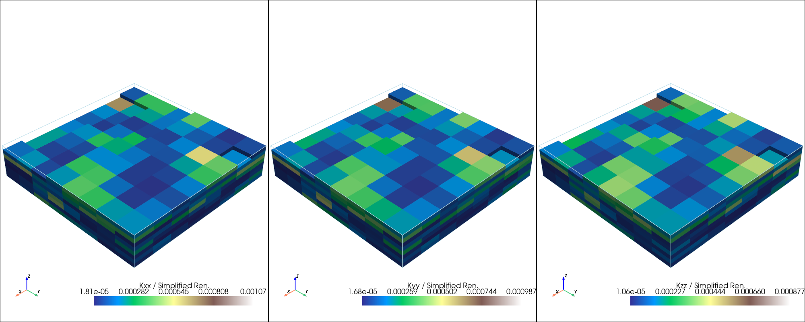
[23]:
pl = pv.Plotter( window_size=[700, 800])
arr = field_kxx/field_kzz
im = geone.img.Img(nx=arr.shape[2], ny=arr.shape[1], nz=arr.shape[0], sx=dx*factor_x, sy=dy*factor_y, sz=dz*factor_z, nv=1, val=arr.reshape(1, *arr.shape), varname=["Kxx / Kzz Simp. Ren. - direct"])
geone.imgplot3d.drawImage3D_surface(im, cmap="terrain", plotter=pl)
# pl.add_title("Standard renormalization - direct", font='times', color='k', font_size=40)
pl.show()
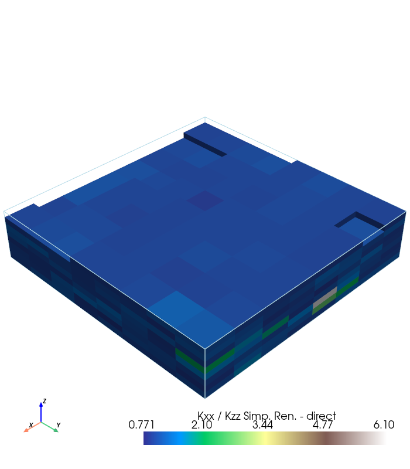
[24]:
t1 = time.time()
field_ari,_ ,_ = upscale_k(sim.val[0, 0], method="arithmetic", dx=dx, dy=dy, dz=dz, factor_x=factor_x, factor_y=factor_y, factor_z=factor_z)
t2 = time.time()
t_arithmetic = t2 - t1
field_har, _, _ = upscale_k(sim.val[0, 0], method="harmonic", dx=dx, dy=dy, dz=dz, factor_x=factor_x, factor_y=factor_y, factor_z=factor_z)
t3 = time.time()
t_harmonic = t3 - t2
field_geo, _, _ = upscale_k(sim.val[0, 0], method="geometric", dx=dx, dy=dy, dz=dz, factor_x=factor_x, factor_y=factor_y, factor_z=factor_z)
t4 = time.time()
t_geometric = t4 - t3
[25]:
pl = pv.Plotter(shape=(1, 3), window_size=[2000, 800])
arr = field_ari
im = geone.img.Img(nx=arr.shape[2], ny=arr.shape[1], nz=arr.shape[0], sx=dx*factor_x, sy=dy*factor_y, sz=dz*factor_z, nv=1, val=arr.reshape(1, *arr.shape), varname=["Arithmetic mean"])
geone.imgplot3d.drawImage3D_surface(im, cmap="terrain", plotter=pl)
pl.subplot(0, 1)
arr = field_har
im = geone.img.Img(nx=arr.shape[2], ny=arr.shape[1], nz=arr.shape[0], sx=dx*factor_x, sy=dy*factor_y, sz=dz*factor_z, nv=1, val=arr.reshape(1, *arr.shape), varname=["Harmonic mean"])
geone.imgplot3d.drawImage3D_surface(im, cmap="terrain", plotter=pl)
pl.subplot(0, 2)
arr = field_geo
im = geone.img.Img(nx=arr.shape[2], ny=arr.shape[1], nz=arr.shape[0], sx=dx*factor_x, sy=dy*factor_y, sz=dz*factor_z, nv=1, val=arr.reshape(1, *arr.shape), varname=["Geometric mean"])
geone.imgplot3d.drawImage3D_surface(im, cmap="terrain", plotter=pl)
pl.show()
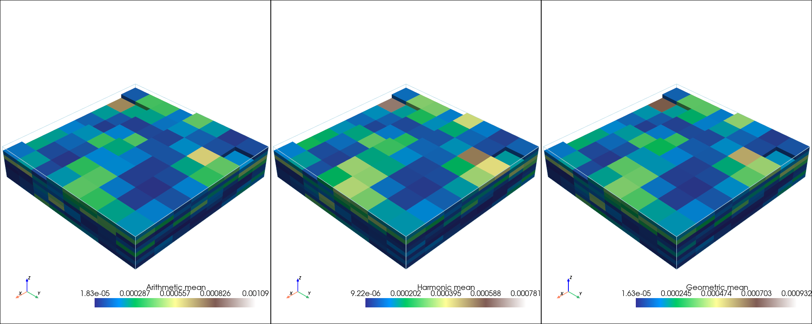
[26]:
import pandas as pd
df = pd.DataFrame({"method": ["Standard - direct", "Standard - center", "Tensorial", "Simplified", "Simplified_C", "Arithmetic", "Harmonic", "Geometric"], "time": [t_standard_direct, t_standard_center, t_tensorial, t_simplified, t_simplified_C, t_arithmetic, t_harmonic, t_geometric]})
# plot times
df.plot.bar(x="method", y="time", legend=False, logy=True)
plt.ylabel("Time (s)")
plt.title("Execution time for different upscaling methods on a {}x{}x{} grid \n with a factor of {}x{}x{}".format(nx, ny, nz, factor_x, factor_y, factor_z))
plt.show()
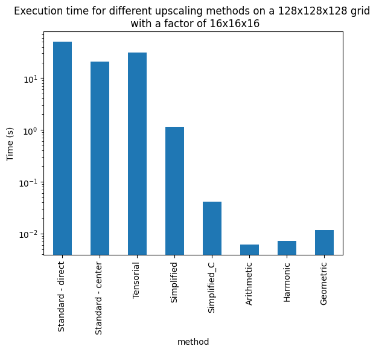